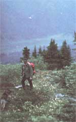
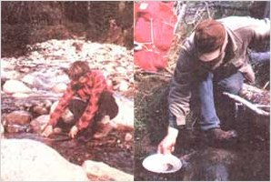
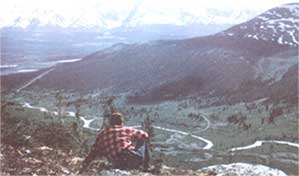

The Canadian Government paid Ingrid Wilcox's Vacation! PROSPECTING IN THE YUKON
My husband Frank and I spent the entire summer of 1971 deep in the beautiful and rugged Yukon wilderness. We camped at two lakes that were so far from the nearest settlement that they'd never been named . . . back packed over mountain ranges few humans have even seen . . . and observed moose, caribou, and wolves in the wild. Yet this remarkable excursion didn't cost us a single cent for either food or transportation.
It all began when the two of us decided to look into the "Prospecting Assistance Program". Under this plan, the Canadian government actually pays individuals to search the bush country for mineral deposits. The government profits from the offer because it gains scientific and geological information about remote national regions. The funded rockhounds, meanwhile, enjoy working vacations in the wilderness and keep the claim rights to any valuable mineral discoveries they may make.
Furthermore, the Prospecting Assistance Program's "dream jobs" are open to anyone 21 years of age or older . . . and an applicant doesn't even have to be a Canadian citizen or resident to be eligible. But, of course, he or she does have to be a prospector!
Fortunately for Frank and me, my husband had participated in the same program before and performed capably, so we pretty much knew that he could get accepted. I'd had no previous training in "hand mining", though, so I had to pass a test on mineral identification. I prepared for the exam by taking a 10-week government-sponsored course in basic geology and prospecting. By the end of this very worthwhile class (which cost only $15! ), I had no difficulty passing the rock-spotting test.
In addition to proving (or, in my case, acquiring) our qualifications, Frank and I were expected to submit a complete prospecting proposal that included our planned budget, a list of the specific minerals we would seek (we decided to look mainly for tungsten), and the area in which we wanted to work. We were free to choose any location in the Yukon Territory, and - after consulting old geology reports and various maps - we chose an area in the Selwyn Mountains some 200 miles south of the Arctic Circle. The region looked as if it would provide both beautiful outdoor scenery and good prospecting possibilities.
When all the planning was done, Frank and I submitted our applications. We soon received an acceptance notice, and - shortly after that - we were given a cash advance with which to buy food and expendable items.
OFF AND OUT THERE
On June 1, the eager-to-go "Wilcox sourdoughs" stuffed a Beaver airplane with an 18-foot canoe, two dogs, a three-month supply of food, prospecting equipment, tents, backpacks, and our other bush country gear. Then we squinched ourselves into the two-pontooned flyer, our (government-paid!) pilot started the engine, and we all lifted off!
After only a few minutes of flying time the last gravel road had faded from view. From that point on, only mountains and rivers were left to guide us . . . and the longer we flew, the more unfamiliar the terrain became. Frank and I were heading into the real Yukon.
When the plane reached the unnamed lake that was our first destination, we landed near a good camping spot . . . said farewell to our pilot . . . and then watched as the last "outsider" the two of us would see for two full months flew off. We spent the next few days clearing shoulder-high brush, building a shelter, and setting up our base camp. (We even planted a small garden of peas, onions, radishes, and lettuce, and - thanks to the warmth from the almost continuous Arctic sunlight - our seeds sprouted in just 24 hours! )
Frank and I were isolated at our beautiful waterside campsite, but we certainly weren't alone. Each evening, moose fed in the valley near us (we could practically set our watches by their arrival) . . . beavers grew so accustomed to our presence that they would swim and labor just yards away from our camp . . . while fish, birds, and wild flora helped fill our humanless haven.
On some days we worked at domestic chores such as baking bread or washing clothes, at other times we fished or went berry-picking, and-during rainy weather-we rested in camp and caught up on our program-required diary.
But we spent most of our time collecting, splitting, and studying rocks (we located a lot of pyrite - fool's gold - and traces of both tin and tungsten). We took long backpacking expeditions in order to rock hunt in awesome and rarely explored mountain ranges. And - because we were unable to resist the prospector's dream of finding the mother lode - we panned for gold in every stream we came across.
At the end of July our pilot returned and transferred us 50 miles farther north, to another lake. The silt-filled glacial body had no fish, and there was less game surrounding it than we'd found at our first campsite.
In fact, the entire area was desolate. We did find a cabin there, though . . . an old shack that dated back to the gold rush of 1898. But our biggest surprise came in mid-August when we stumbled on a small patch of wild currants and, exploring farther, found acres of the hardy shrubs! We spent most of our time the next few days picking, eating, and making jam out of the delicious berries. (We even brought some back to the U.S. and brewed 'em into homemade wine!)
Then, on September 1, our pilot picked us up and flew us back to "civilized" Sheldon Lake . . . and our three months' adventure was over. We hadn't found any particularly significant mineral deposits, but we sure had "found" the never-to-be-forgotten experiences of backpacking, camping, prospecting - and just being at peace with ourselves and nature - in the Canadian wilderness.
Oh, by the way: A year after our Yukon summer, a valuable lode was discovered just ten miles west of one of our campsites. So some folks might look back at our near-miss prospecting attempt and repeat the old saw that we were "so near and yet so far away". I'd have to agree, although for a completely different reason . . . I'd say Frank and I managed both. We were "near" to nature and "faraway" from it all!
HOW TO BECOME A PAID PROSPECTOR
Although the Wilcoxes went rock hunting back in 1971, the Canadian Government's Prospecting Assistance Program is still in existence. And the employment offer is essentially unchanged: The government will pay all the expenses for two months or more of bush country mineral seeking by qualified hard rock (not "stream panning") prospectors. Most people in the program are returnees from previous years ... nevertheless, according to Canada's Department of Indian and Northern Affairs, newcomers often do receive prospecting contracts.
However, "first timers" rarely get the highest possible grant ($1,800), and tenderfeet may receive only a small - or no - prepayment. In such instances, the program's governing committee will review the prospectors' diary reports - along with any geological maps and information turned in - to decide which stone seekers worked enough to merit a final payment for their labor.
The folks in charge of the Prospecting Assistance Program recently proposed raising the individual funding limit to $3,500 (which would reduce the number of people the limited-budget program could sponsor) and giving selection preference to Canadians. Both of these suggested policy modifications might make it harder to join the program . . . but the agency won't know until April 1 whether the proposed changes will be approved.
You can find out about the current program's regulations-and/or where to take the beginner's prospecting course-by writing to Resident Geologist, Department of Indian and Northern Affairs, Whitehorse, Yukon Territory, Canada. If you'd rather prospect in the Northwest Territories, write Resident Geologist, Department of Indian and Northern Affairs, Yellowknife, Northwest Territories, Canada.
|
 Photos by Frank and Ingrid Wilcox In this snapshot Frank is hiking in the Selwyn Mountains of the Yukon. He named this particular area the ""Ingrid Lake Region "", but I'm not too sure the name will stick. |
 The Canadian government's Prospecting Assistance Program does not sponsor mineral hunters who are primarily stream panners ? and Frank and I mainly sought hard veins of metal ? but neither one of us could resist the chance to ""dip a pan or tux"" from time to time in the 3 Yukon's unspoiled (and rarely explored! wilderness streams |
 Frank enjoys a break after a morning spent hiking and prospecting. This picture was taken along North Canal Road. At this point, we hadn't yet been flown to our ultimate destination . . . the truly isolated ? and beautiful ? northeast Yukon |